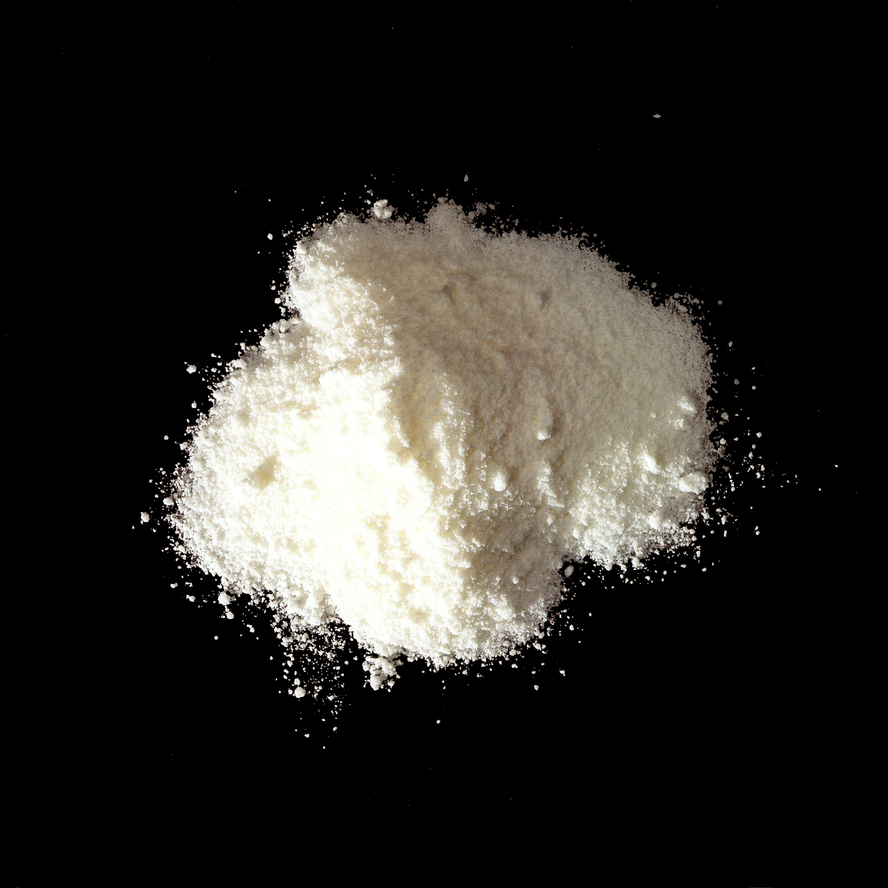

Sodium stearoyl lactylate
(SSL)

25383-99-7
Synonyms or siblings
Sodium stearoyl-2-lactylate, Sodium stearyl-2-lactylate, Sodium 2-stearoyllactylate, Sodium stelate
Funtion
Process and Prep - Emulsifier, Stabilizer
Description
Sodium stearoyl lactylate (SSL) is an emulsifier made from stearic acid and lactic acid. It improves dough stability and softness in baked goods and acts as an emulsifier in cheese sauces, crème fillings, puddings, coffee whiteners, and low-fat margarines. Despite its many uses, SSL constitutes less than 1% of most flour mixtures.
다양한 이름
소듐스테아로일락틸레이트, SSL
기능
유화제, 안정제
설명
스테아릴젖산나트륨은 가공 식품의 혼합내성과 부피를 개선하기 위해 사용되는 다용도 식품첨가물이다. 백색-황색을 띠는 분말이며 고온의 유지에 용해되고 온수에서 잘 분산된다. SSL은 효과가 높은 식품첨가물이기 때문에 제빵류, 케이크, 면류, 치즈류 및 드레싱의 소스류 등 각종 식품류에서부터 애완동물 사료에 이르기까지 각각의 용도에 맞게 사용된다.